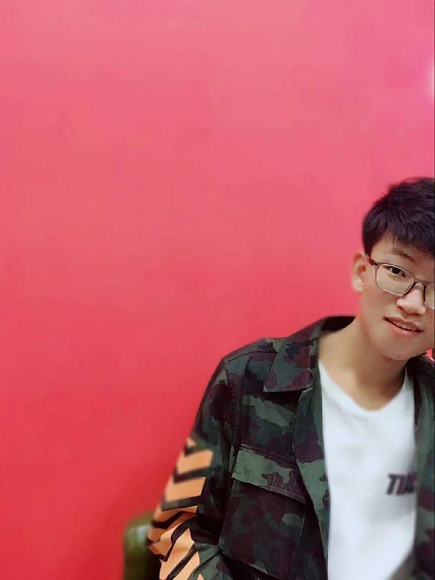
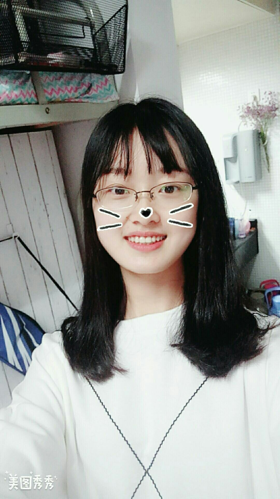
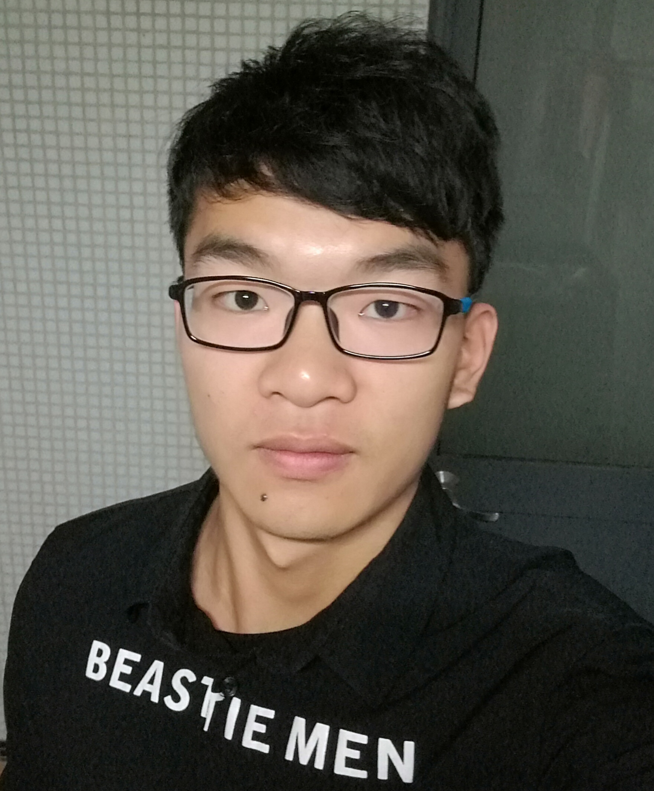
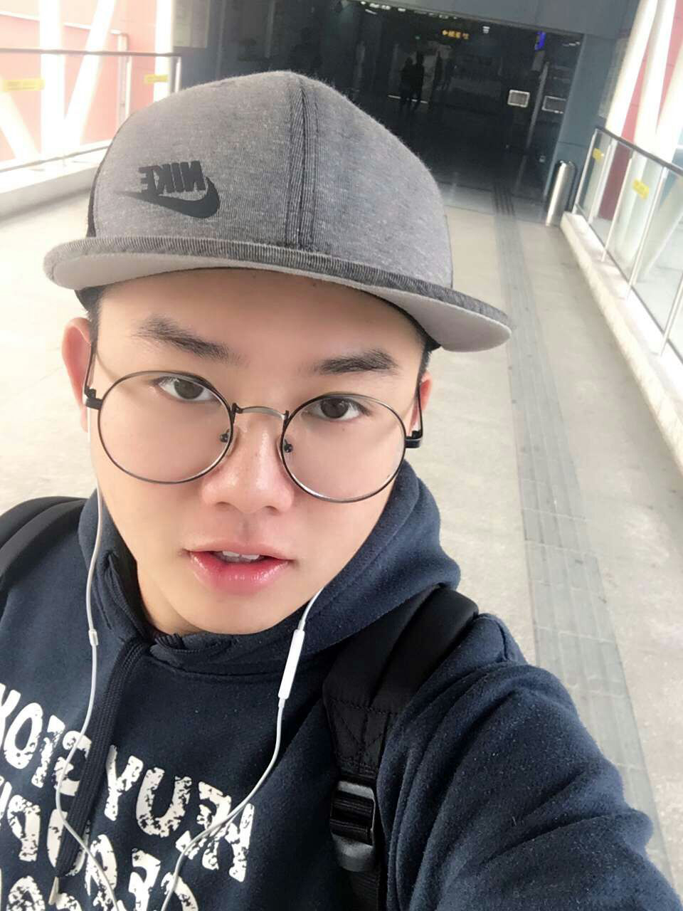

我们是谁
我们是来自南京高校的志愿者。我们致力于维护和改善周边河流、湖泊、池塘和湿地等的环境，使其美丽且健康地发展。我们计划每年在世界地球日附近（一般是周六），举行以主题为河道清理的公益活动。
注：原计划将活动举办在母亲节的前一天，然而在2016年的实践过程中，我们发现：五月份是梅雨季节，河水上涨，已经将河岸的垃圾带走或掩盖。因此我们将活动改在四月份的地球日附近。
组织部
指导老师 Tony Sansotta |
负责人 王麒曈 |
||
 活动顾问 高海栋 |
外联部
高海栋 |
孙凯钰 |
任世钰 |
王也 |
沈依婷 |
 王雯冉 |
 徐梦寒 |
宣传部
李瑶 |
韦子轩 |
吴佳敏 |
汤颖倩 |
后勤部
王雪如 |
 苏宇迪 |
刘钦 |
 王玉山 |
王菊 |
 林莉 |
历史成员
李伟 |
蒋雅乐 |
||
丁明媛 |
甘卓成 |
黄嘉怡 |
刘颖 |
秦浚博 |
王梦雨 |
王诣淳 |
古丽扎尔 |
顾馨兰 |
刘祎婧 |
马洒 |
任世钰 |
史昀鑫 |
彭诗语 |
张婷 |
薛旺 |
许振宇 |
熊志鹏 |
王睿智 |
 周盛啸 |
吴涛 |
杨方宸 |
陈鹏 |
盛依莲 |
秦贝贝 |
饶欣然 |
孙叶楠 |
王相宜 |
薛莲 |
张菁 |
张佳雯 |
章诗沁 |
常见疑问Q&A
"母亲河·母亲节"的发起
-
母亲河·母亲节是什么？
由南京大学学生成立的一个帮助清理南京地区河岸的公益组织。
-
该项目是怎样发起的?
该项目是南京大学外国语学院英语系的外教Tony和英语系、计算机系、政府管理学院、商学院等学生发起的。
-
为什么要保持河岸清洁?
我们都需要干净的水。但我们国家的水资源正面临越来越大的压力，这些压力来自我们不断增长的人口，工业的发展，能源的生产与消耗，农业灌溉和气候变化带来的挑战。 保持河岸清洁能减少污染，而污染问题已经影响到我们生活的方方面面。
-
为什么项目名称为“母亲河母亲节”?
因为该项目将在每年的母亲节前一天（五月的第二个周六）进行。注：原计划将活动举办在母亲节的前一天，然而在2016年的实践过程中，我们发现：五月份是梅雨季节，河水上涨，已经将河岸的垃圾带走或掩盖。因此我们将活动改在四月份的地球日附近。
项目的相关支持
-
南京市政府支持这个项目吗？
南京市政府的公益项目处从一开始就同意了该项目，并将帮助联系相关部门提供需要清洁的河岸。
-
南京大学支持该项目吗?
“母亲河母亲节”是南京大学共青团公益项目之一，共青团领导成员也是该项目成员之一。
项目的志愿者
-
成为该项目的志愿者需要哪些条件？
南京地区的居民都可以注册成为项目志愿者，以便我们记录和管理志愿者。活动的主要对象是南京大学的学生。
-
如何组织并进行如此庞大的河道清理活动？
我们将对所有志愿者的个人信息一一记录在案，将根据具体的志愿者人数以及敲定的清理区域进行分组，在活动正式展开之前我们将组织志愿者进行简单的培训，培训内容主要包括分组信息、负责区域、清理内容和注意事项。
-
如何为志愿者提供活动的最新动态？
一切对活动感兴趣的同学均可通过我们的主页了解活动的最新动态。此外，对于已审核通过的志愿者，我们将通过电邮和站内通知（登陆后即可看到消息）来告知志愿者培训日期和清理区域等活动通知。
关于项目运作
-
该项目是一次性的吗?
不是，“母亲河母亲节”项目计划每年母亲节进行。 希望随着项目的发展，越来越多的南京高校学生参与进来。 该项目的目标是希望母亲节的前一天能成为中国河岸清理日。
-
项目资金从哪儿来?
完全来自在南京有业务关系的公司捐助。
-
项目组委会的成员有报酬吗?
没有，项目组委会的所有成员都是没有一分钱报酬的志愿者。
-
网站的内容很详细，这意味着花了很多时间来设计和开发，那么网站的设计师和开发者有报酬吗?
没有，第一版网站设计和开发者是南京大学的学生甘卓成和秦浚博，目前正在使用的网站前端由南京大学的学生马洒设计并开发，三位同学一起维护。他们都是无偿志愿工作者。
-
捐赠的基金能确保不被滥用?
每年6月底，捐助明细（捐助金额和捐助人姓名）和捐款用途将在项目官网公布，收支明细将一览无遗。
-
捐款如何保管?
所有捐款将被存入南京大学共青团的银行账户。
-
如何捐款？
点击这里，或者在点击页面导航栏“赞助我们”，进入页面并填写相关信息，我们的工作人员会与你联系。